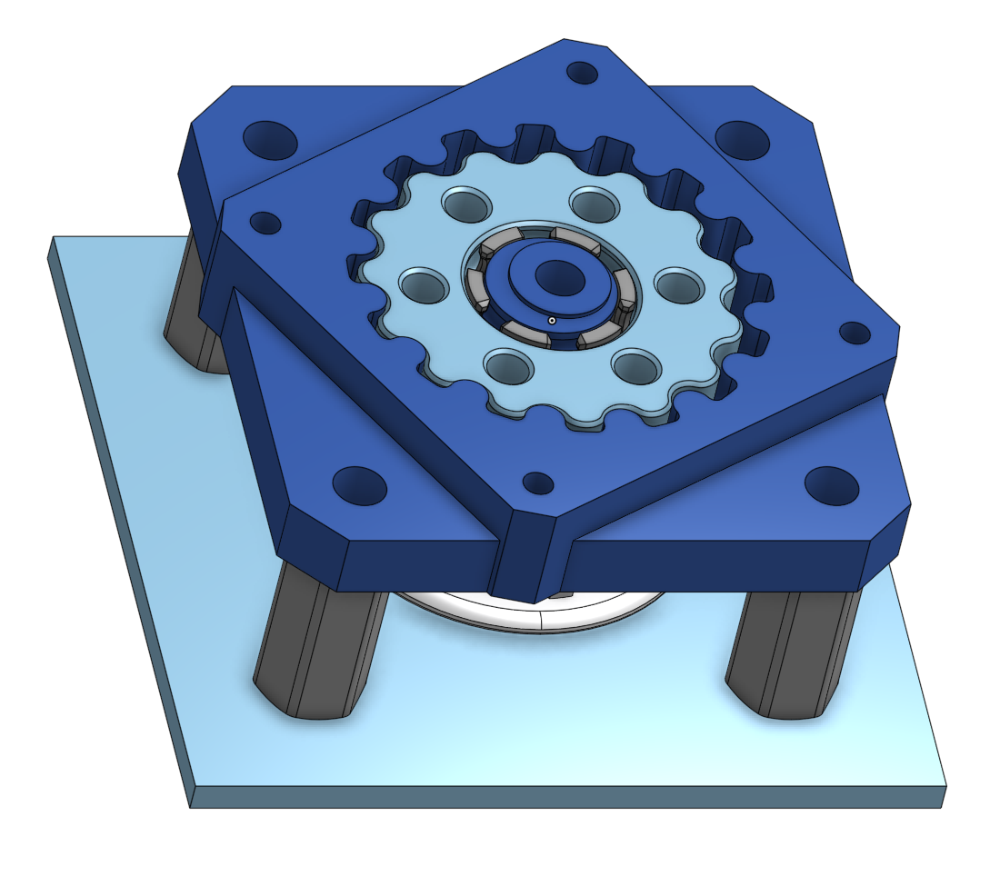

EE106A Fall 2023 Final Project
Group 35 - MRI Robot
David Guo, Nai Chen Zhao, Wesley Jiang, Cedric Murphy, Charles Paxson
Introduction
Transcranial Magnetic Stimulation (TMS) is a procedure that uses powerful magnetic fields emitted from a handheld coil to stimulate certain areas of the brain. It has been found to have positive effects on patients with depression and obsessive-compulsive disorders.
However, the exact biology of TMS is not very well understood. Our robot is intended to help study TMS and its effects on the brain by allowing it to be conducted repeatably within an MRI machine, so imagery can be taken immediately following the stimulation.
Since this robot will be able to function around an MRI machine, it could be used for other research and procedures relating to the brain.
Design
Our robot must be able to move a TMS coil into light contact with a human head, within an MRI machine.
In doing so, it must be reliable, safe, and easy for the therapist conducting TMS to control.
Since this robot will work within an MRI machine, it cannot have any ferromagnetic materials. However, this project is simply a prototype to test the overall architecture, so there are several ferromagnetic components
Hardware
Design Overview
We designed a 6-axis robot, composed of two main assemblies: a 3 axis Cartesian gantry, and a 3 axis rotating end effector.
The rotating end effector then has two parts: a rotation joint and a two-axis differential wrist joint. We use this differential joint instead of discreetly actuating the pitch and yaw axes to reduce the number of wires that need to move around a joint, and to make the end effector more compact.
Each of the prismatic joints is belt-driven directly by the stepper motors.
The rotating joint (roll) connecting the gantry to the wrist has a worm drive.
The wrist joint has 2 axes, each driven by a pancake stepper motor with a 15:1 3D printed cycloidal drive. These drives have custom bearings with nylon balls running in 3D printed races.
These drive timing belts that move the two sides of a bevel gear differential, upon which is mounted our force/torque sensor and end effector.
Design Choices and Trade-offs
When we began this project, the Cartesian gantry had already been bought, and unfortunately its range of motion was rather lacking. We had to offset the wrist joint from the rotation joint to give us a usable reachable workspace that would let us reach either side of an adult human's head. We also had to cut down the workspace, so the arm can only either reach the front half of a person's head, and the back half, with the patient simply be turned over on the tray to reach the other side.
Additionally, the gantry we ultimately received lacked a couple of key components, most importantly the rotation joint. It was shipped later, but it did not have any kind of motor mount, so we just designed our own.
Finally, we got a prototype of the wrist arm made of acetal, and we noticed that with the NEMA 23 motors we originally planned to use, that bending was a concern. To solve this, we remade the wrist arm with acrylic, and designed 3D printed cycloidal drives that would allow us to use 50mm pancake stepper motors instead that were much lighter.
Electrical
Since we are just working on a prototype, we decided to drive our robot with stepper motors, since they are precise and easy to use.
To make the wiring between the encoders, motor drivers, and microcontroller simpler, we designed a custom PCB with a socket to directly plug in the STM32 Nucleo microcontroller. It manages power conversions from 24V to 5V and 3.3V. It greatly simplifies wiring and minimizes harnessing issues.

It has five main features for each motor:
- A STEP/DIR/ENA interface to each stepper driver
- A quadrature encoder interface
- A limit switch interface
- A ENA switch to toggle individual motors
- A XT-60 connector for power to stepper drivers. (this connector has a 60A rating and we will draw at most 1A at 24V)
The X, Y, and all three revolute axes are driven by TB6600 stepper drivers, which were perfect for our application since they can supply high current and were quite cheap.
Software
Controller
Runs ROS Noetic on a Ubuntu 20.04 VM. There are five main nodes:
- Head GUI
- OptiTrack Receiver
- Path planner
- STM32 Interface
- Force/Torque Receiver
The Head GUI will publish a point cloud, and a selected point. This data is passed through a TF transform obtained from the OptiTrack node, where the now-transformed point is sent to the path planner, and the point cloud is displayed on RViz.
The path planner is the most important node. It takes in sensor data, the desired input, calculates a path, then uses MoveIt to determine the required joint angles. Finally, it displays that plan on RViz for the user to confirm the trajectory, upon which it will be sent to the low-level controller through the STM32 interface node.
Low-level Controller
The low-level controller runs entirely on the STM32. It takes in UART commands over USB to drive the motors.
For the three prismatic joints of the Cartesian gantry, it runs a PID controller for each motor since those joints have functional encoders (It isn't strictly necessary on the Z axis since it has a lead screw instead of easy to back-drive belts that are on the X and Y axes)
For the three revolute joints, it just runs the motors in open-loop since the gear reductions on those joints are relatively high so backdriving is unlikely.
Implementation
Hardware
The manufacturing and assembly processes were fairly straightforward on the mechanical side.
Electrical
This is the PCB mounted and wired to all the stepper drivers. You may notice that there are only 5 motor drivers, despite us having 6 motors. This is because the Z axis motor is closed-loop and has a built-in stepper driver.
This motor had an issue with the 3.3V logic on the STM32 for only the DIR pin, so we had to create a pull-up for the signal to 5V, which was done with a random NAND gate chip we found and a mini breadboard.
We also had some issues with the encoder wires, this time due to software issues with the STM32 on certain pins. So, we rewired a few of the encoder pins.
Software
Head GUI
A python GUI allows a user to select head zones. This ran independently of RVIZ. Not all points on the head are selectable since the back half is unreachable. An even point density cloud was achieved with voxel down-sampling. The GUI transforms the head normal vectors and points to the world frame and publishes them.
Point cloud data shown with Plotly.js instead of Matplotlib, which we use with ROS.Path Planner
The path planner waits for a target point and normal vector from the Head GUI node, and when it gets a target, it transforms the point and normal vector to the robot frame using the OptiTrack data.
It takes this target position and calculates a corresponding position on a "safety sphere" that is larger than the head, and sends both of these positions to MoveIt for inverse kinematics.
Robot shown about the head point cloud with the safety sphere in MoveItWith the returned joint positions, it sends commands through the STM32 Interface to the robot to first move to a home position on the correct side of the head, before plunging into the position on the "safety sphere".
At this point, it switches to "critical" mode, where the robot will move much slower, and plunge towards the head while taking continuously checking the force from the F/T sensor. When it reaches a threshold, the robot stops and backs up slightly. At this point, TMS could be conducted on the patient.
Finally, the planner executes similar steps in reverse to safely retract from the head and wait for the next target point.
STM32 Firmware
The firmware receives serial commands containing the motor positions each joint should move to.
The motors are controlled using the AccelStepper library, which allows us to send either a position or velocity command to each motor. This made implementing both open-loop control and closed-loop PID control much easier.
There are then two speed states: "standard" and "critical". Standard mode is used to move and position far away from the head, and while approaching the head we use the critical mode to move much slower and listen for a stop command from serial.
STM32 Interface
The STM32 interface node takes messages from the data from the path planner and sends it over serial to the STM32 for execution. It also takes the encoder readings from the STM32 and sends them to RViz to allow the robot model to update its position in real-time.
OptiTrack
We reused the OptiTrack setup that our lab already had, but we had to redo the calibration and learn the ins and outs of the system. It consists of 8 IR cameras with IR emitters that are connected over USB to a desktop PC running an application called Motive.
Motive filters the images from these cameras to isolate the IR reflective tracking points, and uses two-view geometry to locate them in 3D space. A set of at least 3 points can be combined into a "trackable", which allows it to calculate a 3D pose of the object.
Our Motive license is from 2011, and it would cost at least $1000 to update. We had a lot of issues calibrating the cameras, which could possibly have been solved with a newer version of the software that continuously refines the calibration as the system is used. Even with the issues, though, we were able to get decent tracking data sent to ROS.
However, even if we updated the software, Motive is only compatible with Windows. This meant that, to be compatible with all our ROS software, we had to use a separate Ubuntu computer for ROS and a Windows computer for Motive, using the Virtual Reality Peripheral Network (VRPN) interface to transfer the tracking data over a local network.
 The blue box on the right represents a USB hub, connecting the cameras to the Motive PC, and then uses VRPN to send data through a LAN to ROS.
The blue box on the right represents a USB hub, connecting the cameras to the Motive PC, and then uses VRPN to send data through a LAN to ROS.
Results and Conclusion
Ultimately, our project functioned fairly well. It was able to target a point on our mannequin head and then touch it at that point.
However, it still has a long way to go. We had several issues in the current solution, and have more features we want to implement for this project.
Issues
- Encoders on the revolute joints didn't work, which we believe was due to electromagnetic interference from the motors. If this is a problem now, it will be even worse in the multi-Tesla magnetic field of the MRI, so we have to get new encoders.
- The OptiTrack software license we have is from 2011, so it has a lot of quirks and was kind of unreliable. Also, the calibration of the system takes forever and often fails to be perfect. We may end up reconfiguring the cameras to target the mannequin head more directly, or find another tracking system to localize the head.
- MoveIt's inverse kinematics solver was really finicky, which we believe is partially due to our quaternion implementation, and partly due to the solver not being optimized for prismatic joints. So, we plan to create a custom IK solver, since with our current robot architecture, it is rather simple to derive.
Future plans
- Integrate non-ferromagnetic ultrasonic motors
- Finish iterating on the Series Elastic Actuator (SEA) design and integrate it into the robot to allow for more force sensing
- Get a new, non-ferromagnetic and more reliable force/torque sensor (we've been having connectivity issues)
- Rebuild the gantry without any ferromagnetic materials, buy a new, larger one, or switch to an articulated arm architecture
- Use the torque reading from the sensor to automatically get closer to truly tangent to the head
- Create a UI to allow a therapist to manually dial in the position of the TMS coil
Team

Additional Materials
All of our data is available on our GitHub repository!
ros_workspaces - ROS workspace containing all our nodes
EECS106a_STM32 - STM32 firmware
SLD_exporter - CAD files
master_node - PCB design files
website - Website assets
Credits/Thanks
Project
- Everyone in the Biomimetics Millisystems Laboratory. In particular:
- Binghan He
- Sareum Kim
- Martin Zeng
- Daniel Dapula
- Ronald Fearing
- EECS C106A Staff
- TAMS Group - created a ROS node to interface with the ATI-IA Wireless F/T system
- ROS Packages
Website
- Image slideshow code - W3Schools
- Plotly Javascript library